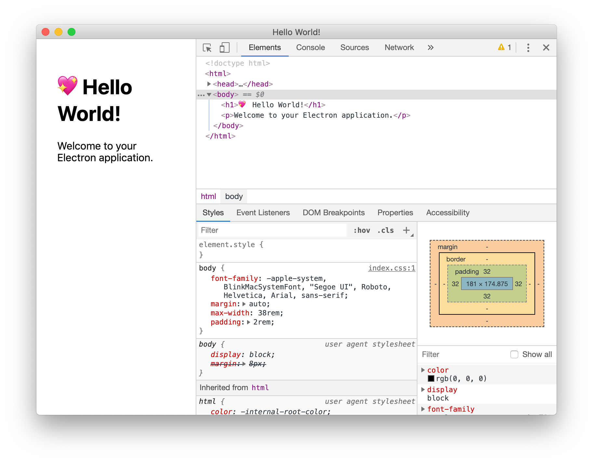
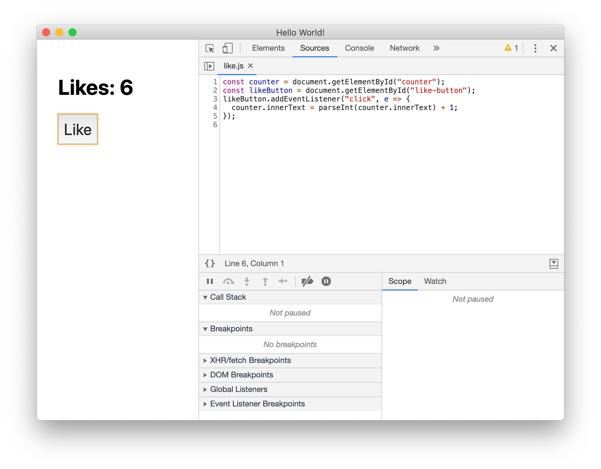
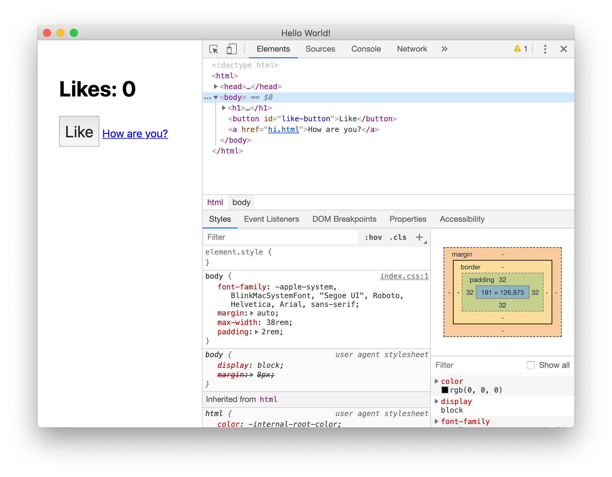
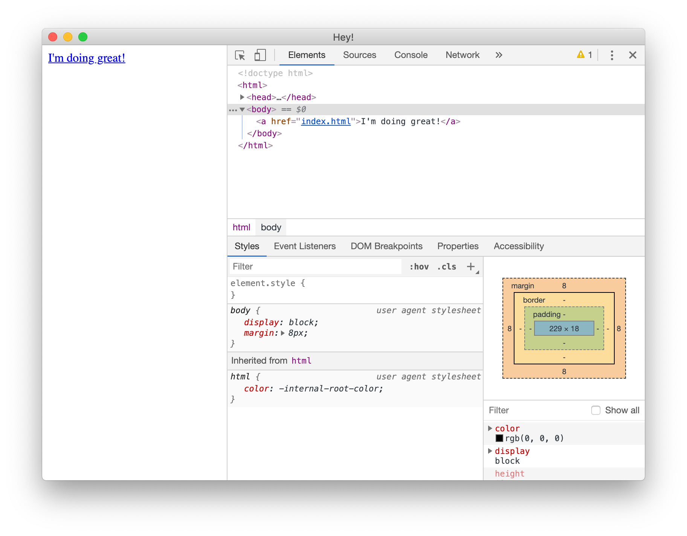

TLDR;
npx create-electron-app app-name
npm start
The github team brough us Electron, a cross platform application platform that allows Web-trained developers to spin up desktop applications quickly and fluidly. Electron attempts to bridge the benefits of web-development tools and cross platform solutions of the internet to our personal computers as desktop applications.
In order to do this, electron has allowed developers to bring in their knowledge of HTML/CSS/JS into application development. Although with some slight differences, the DOM still exists for javascript, navigating to web-pages still exists and many of the expectations we have of the web are allowed to exist on a desktop environment.
Many strong desktop applications have been developed using electron such as Atom/VSCode editors and Slack.
In order to start using Electron we can use a funky npx command and it will spit out minimum boilerplate code.
npx create-electron-app cat-button #=>
cat-button
- node_modules
- ...
- src
- index.css
- index.html
- index.js
- package.json
- yarn.lock
In our source folder we are given a couple of example files that allow us to launch an application. We can now run
npm start
And it will launch up the hello world application with Chrome Dev Tools! 
From here you are given complete freedom as a web-developer.
We can do DOM-manipulation via the same methods we are used to,

And we can navigate to different views using href.
 
Electron also gives us access to a ton of new libraries that allow for file-manipulation or bluetooth integration. There are also many more things supported and I encourage anyone to checkout the Electron Docs
If you have any questions for me, feel free to shoot me an email below.
Thanks for reading.